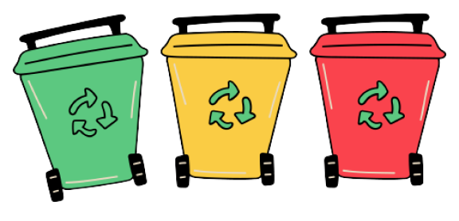
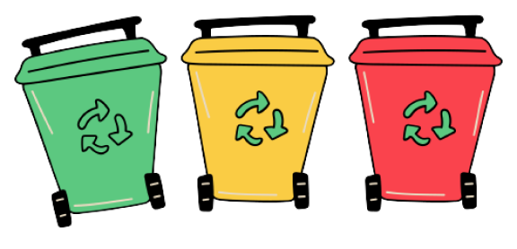
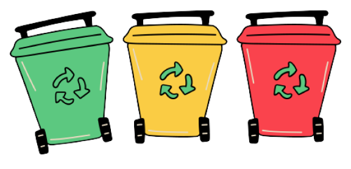
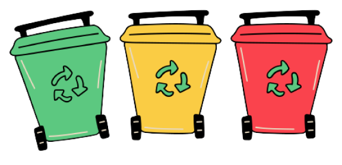

Clean Beach
 



Um dos animais que foram estudados, tinha no seu corpo 742 resíduos de lixo, em que boa parte desse lixo era plástico.Um dos animais que foram estudados, tinha no seu corpo 742 resíduos de lixo, em que boa parte desse lixo era plástico.Um dos animais que foram estudados, tinha no seu corpo 742 resíduos de lixo, em que boa parte desse lixo era plástico.Um dos animais que foram estudados, tinha no seu corpo 742 resíduos de lixo, em que boa parte desse lixo era plástico.Um dos animais que foram estudados, tinha no seu corpo 742 resíduos de lixo, em que boa parte desse lixo era plástico.Um dos animais que foram estudados, tinha no seu corpo 742 resíduos de lixo, em que boa parte desse lixo era plástico.
Um dos animais que foram estudados, tinha no seu corpo 742 resíduos de lixo, em que boa parte desse lixo era plástico.Um dos animais que foram estudados, tinha no seu corpo 742 resíduos de lixo, em que boa parte desse lixo era plástico.Um dos animais que foram estudados, tinha no seu corpo 742 resíduos de lixo, em que boa parte desse lixo era plástico.Um dos animais que foram estudados, tinha no seu corpo 742 resíduos de lixo, em que boa parte desse lixo era plástico.Um dos animais que foram estudados, tinha no seu corpo 742 resíduos de lixo, em que boa parte desse lixo era plástico.Um dos animais que foram estudados, tinha no seu corpo 742 resíduos de lixo, em que boa parte desse lixo era plástico.
Um dos animais que foram estudados, tinha no seu corpo 742 resíduos de lixo, em que boa parte desse lixo era plástico.Um dos animais que foram estudados, tinha no seu corpo 742 resíduos de lixo, em que boa parte desse lixo era plástico.Um dos animais que foram estudados, tinha no seu corpo 742 resíduos de lixo, em que boa parte desse lixo era plástico.Um dos animais que foram estudados, tinha no seu corpo 742 resíduos de lixo, em que boa parte desse lixo era plástico.Um dos animais que foram estudados, tinha no seu corpo 742 resíduos de lixo, em que boa parte desse lixo era plástico.Um dos animais que foram estudados, tinha no seu corpo 742 resíduos de lixo, em que boa parte desse lixo era plástico.
Click aqui e veja nosso PDF